| Ribbed Domes Tutorial (page 2) |
|
« Back to Page 1
3. Preparing the Beams
Vertical Beams
First we will cleave the outlines of the beams into the walls of the dome. Drop into front view (Shift-2), and set your grid snap setting to 0.05 with F4. Now, multiselect the surfaces shown in the following screenshot. Make sure they're the surfaces on the NEAR side of the dome. They will appear brighter than the surfaces on the far side.
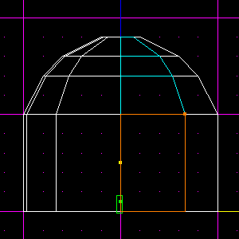Now, make a parallel cleave to the right of the left edges of those surfaces (the vertical line in the centre). Make it as close to that line as you can get (this should be within 0.05 JKUs). Here is mine after cleaving, with the newly created surfaces selected for your viewing pleasure.
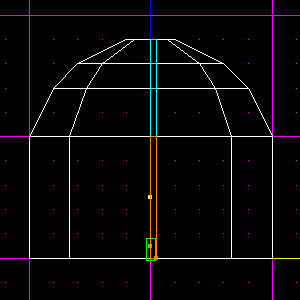 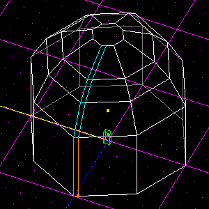Make sure you're in Shift-2 view. Hit Shift-Left Arrow 9 times. This will orient the view so that it's the same as before, except that you're looking straight at the next edge, going counter-clockwise around the dome. You can confirm this by holding R and looking around, but when you're done, return to this view.
Go to Commands > Grid to view to line up the grid with the camera. This is important; otherwise your will not be able to cleave correctly. Now do the same as you did before. Multiselect the surfaces to the right of the line down the centre, and cleave them as before. Again, make sure you select the surfaces on the NEAR side of the dome. Once you're done, you should have this (I have again selected the surfaces we just created, for clarity only):
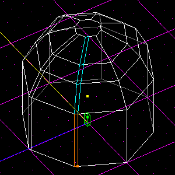Using the same method, keep going counter-clockwise around the dome, multiselecting and then cleaving the surfaces in exactly the same way, until all 8 sides have been cleaved:
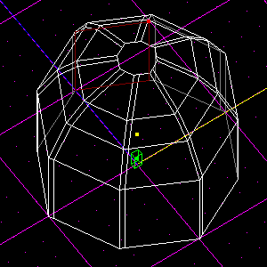Horizontal Beams
Now, go around and multiselect all the large surfaces (not the thin ones) on the bottom section, like so. Look closely, you will see that I have in fact only selected the large surfaces:
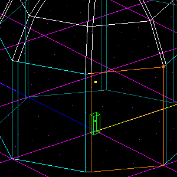Settle into Shift-2 view, and cleave the very tops off of those surfaces, just 0.05 JKUs below their tops (the horizontal line). Déjà vu, anyone? Here's mine, after cleaving (I have selected the newly created surfaces for clarity):
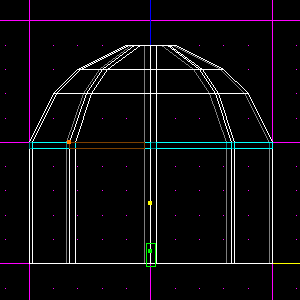 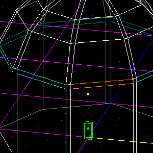Do the same thing to the 3 other sections, and it's on to step 4!
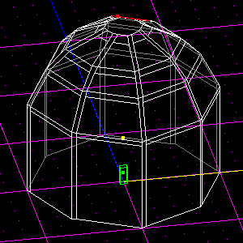
4. Extrusion
This step can be a bit tedious, but at least it's dead simple. Go through every one of the "large surfaces" in the dome (including the octogonal surface on the very top), press Shift-X, and extrude it by 0.1 JKUs. This part is probably why most people have trouble figuring this technique out. When you look at ribbed domes, it seems that the beams intrude, while it is actually the other surfaces that extrude.
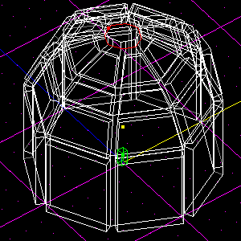Tada!
Here is the final product in 3D Preview, textured for clarity, and of course your viewing pleasure.
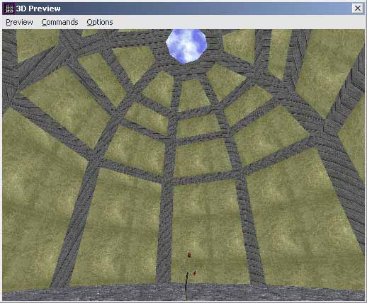You can also get a great open-air feel by changing the textures around. Click here to see.
Thank you for reading and have fun! :)
Credits